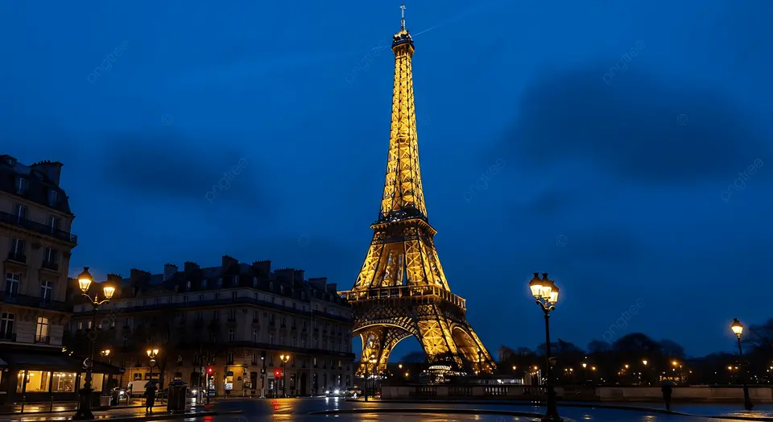
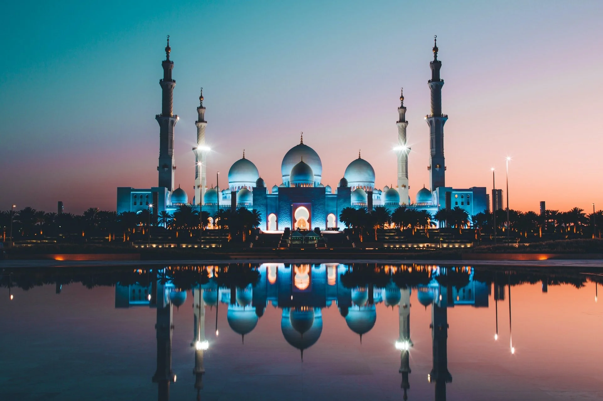

Paris, França
Paris é a capital da França e uma das cidades mais famosas do mundo. Conhecida como a “Cidade Luz”, destaca-se por sua rica história, cultura, arte e arquitetura. A cidade abriga pontos turísticos icônicos como a Torre Eiffel, o Museu do Louvre e a Catedral de Notre-Dame, além de ser referência mundial em gastronomia e moda. É um destino muito procurado por turistas que buscam romantismo e experiências culturais únicas.

Dubai, Emirados Árabes
Dubai é uma cidade moderna e luxuosa conhecida por seus arranha-céus impressionantes, ilhas artificiais e arquitetura futurista. Localizada no deserto, combina tradição árabe com inovação, oferecendo experiências como safáris no deserto, shoppings gigantes e hotéis de alto padrão. É famosa por atrações como o Burj Khalifa, o prédio mais alto do mundo, e por ser um importante centro turístico e financeiro global.
